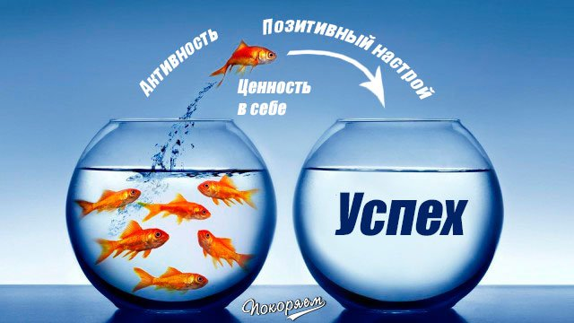
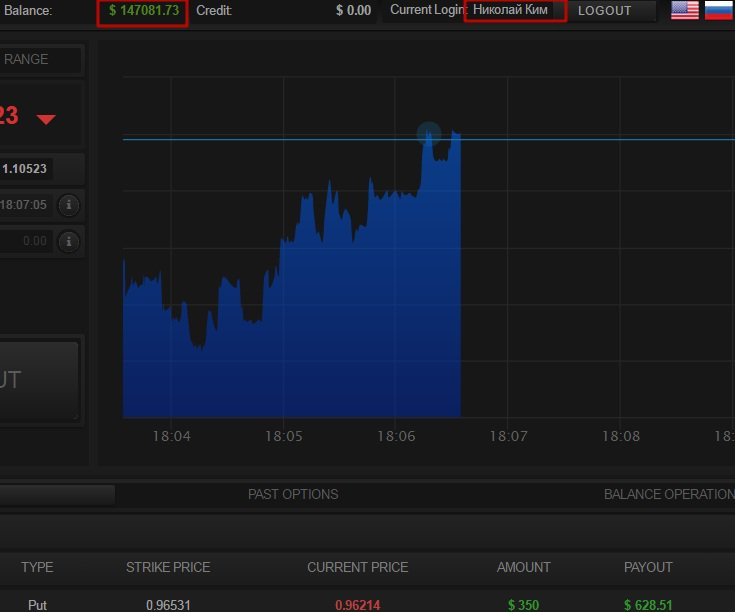
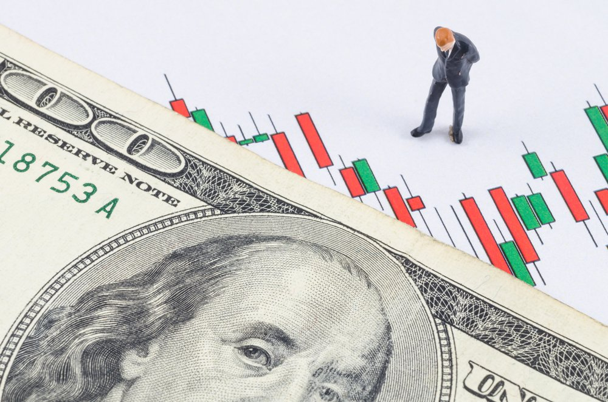

{kind=link}
{kind=link}
{kind=link}
{kind=link}
{kind=link}
Нет, система сигналов построена таким образом, что абсолютно любой человек сможет на ней зарабатывать. Достаточно следовать инструкциям,которые идут с сигналами. Это не сложнее, чем приготовить чашку чая.
Приветствую Вас на сайте signalsacademy.com Меня зовут Николай Ким и я идейный вдохновитель создания нашей команды, которая уже 4 года успешно торгует на финансовых рынках и помогла не одной тысяче людей стать финансово независимыми. Мне 43 года. Женат, воспитываю сына и дочь. Сын учится в университете в Корее (Вы наверное уже поняли, что я кореец рожденный в России) на 2-м курсе, а дочь в лицее города Санкт-Петербург.
Немного цифр. Мы помогли заработать нашим подписчикам более 1,7 млн долларов за 2015 год.
Но не все сразу было так хорошо. Первые полтора года моей работы, которую я вел самостоятельно, работая параллельно преподавателем в университете были не успешными. Я старался выработать алгоритм, который бы мне постоянно приносил успех, но в итоге мой баланс за 1,5 года был минус 4580 долларов. Как преподаватель психологии, я долго анализировал в чем причина и наконец-то их нашел.
Первая причина - это неумение вовремя остановиться. Когда шли потери я пытался отыграться. Наверное Вам тоже знакомо это чувство, когда уверен в своей правоте и шаг за шагом делаешь одни и те же ошибки.
Вторая - я не мог следить за всем рынком из-за работы и часто упускал хорошие возможности. Обсуждая этот вопрос с мои товарищем Александром, который работал в то время на кафедре информатики, мы пришли к выводу, что для достижения успеха нужно свести к минимуму человеческий фактор. Для этого Александр предложил мне написать алгоритм моих стратегий для автоматической подачи сигналов.
На создание ушло 1,5 месяца. Мы запустили алгоритм и знаете что? ОН ТОЖЕ ПРИНОСИЛ УБЫТОК(( Правда меньше, чем от моей ручной торговли.
Следующим нашим шагом была загрузка в в алгоритм примерно 95 стратегий и тестирование на протяжении полу года. Некоторые стратегии были откровенно провальными, некоторые работали в ноль. Было лишь 7 стратегий, которые приносили положительный результат. Но проблема была в том, что там где одна стратегия приносила успех - вторая теряла деньги.У них были абсолютно разные настройки и они работали на разных рынках.
Последним нашим большим шагом к успеху была интеграция 7-ми успешных стратегий в один алгоритм. Александру даже пришлось привлечь одного из своих успешных выпускников, настолько непростым оказался этот алгоритм. После 8 месяцев тестирования алгоритма результат нас просто поразил - 84% успешных позиций!

Следующие 7 месяцев пролетели очень быстро. Нас было уже 3-е в команде и мы начали при помощи нашего алгоритма раскручивать свой депозит у брокера. Я смог инвестировать на счет 500 долларов, ребята добавили по 250. Все таки я все это затеял. Сейчас я могу показать Вам свой баланс спустя уже 4 года трейдинга и 2 лет трейдинга с одним брокером, которому я полностью доверяю.

Через 8 месяцев мы уже не работали в университете и жили попеременно то в России, то зимой в Азии. После того, как первый финансовый голод был удовлетворен, мы с Александром задумались над совмещением нашего бизнеса и основной профессии. Причины было 3:
1. Мы действительно любили преподавать и нам было чему научить
2. В России начинался кризис и мы хотели помочь, по мере своих возможностей людям быть финансово независимыми.
3. Брокер с которым мы работали и работаем, видя наши результаты и обьемы торговли на тот момент - предложили нам дополнительную доходность по активам 3%, а также возможность приводит новых трейдеров, которые смогут делать еще больше торгового оборот и соответсвенно приносить им прибыль. За это нам тоже предложили 3% от каждой успешной сделки.

Так как большинство времени мы уделяли трейдингу, решено было создать онлайн курс и проводить раз в неделю-две онлайн семинары по 7 стратегиям, который приносят прибыль.
Мы сознательно не предоставляли алгоритм нашим подписчикам, так как при массовом расспространении алгоритма на рынке он естественно дошел бы до людей на бирже и уж они смогли бы придумать, как не позволить ему приносить такую прибыль. Ведь в итоге мы зарабатывали деньги, который принадлежали "большим дядям".
В этом году, под шквалом писем-просьб наших подписчиков, мы решили предоставить доступ к нашему алгоритму закрытой группе пользователей.
Чтобы было честно, мы приняли решение дать доступ к автоматическим сигналам 100 нашим старым подписчикам и 100 новым. Чтобы потом не слышать упреки в дедовщине))
Раз Вы попали на этот сайт, значит наш поисковый алгоритм определил Вас в числе 100 новичков, которые смогут получать эти сигналы абсолютно бесплатно.
НО! Доступ к сигнальной системе дается ЛИЧНО Вам. Не в коем случае не предоставляйте его посторонним. В противном случае мы будем вынуждены отключить Вас от системы в целях безопасности алгоритма.
Николай, дай мне мой доступ к сигналам